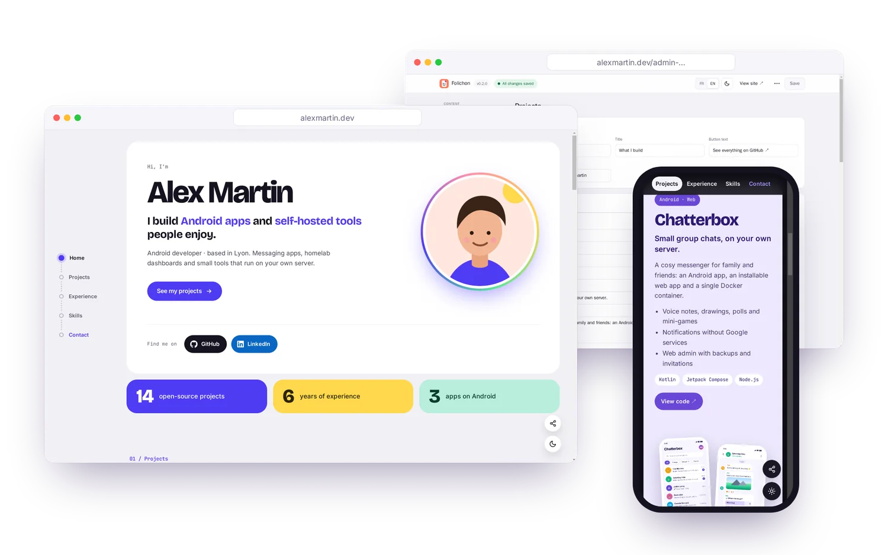
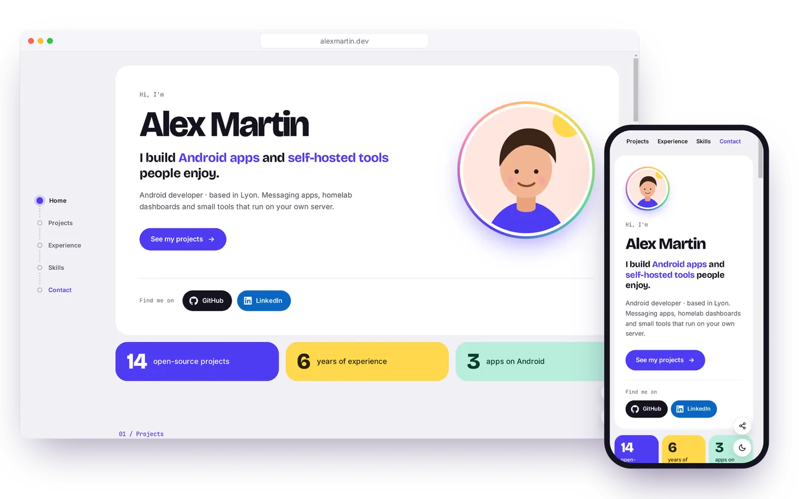
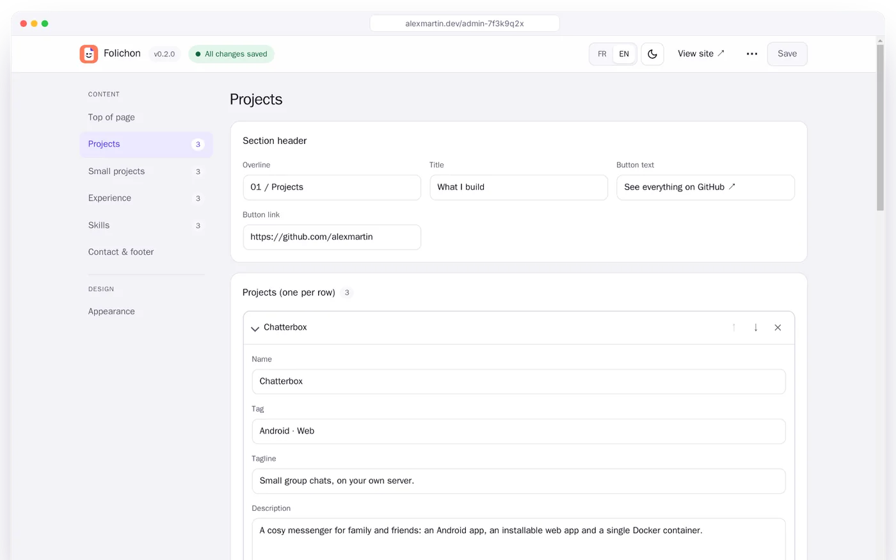
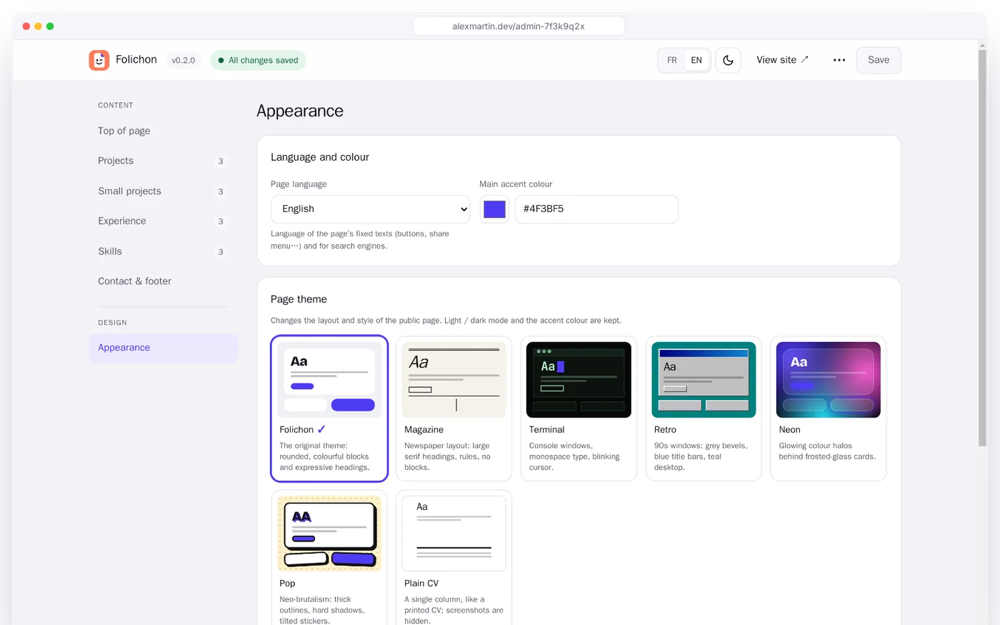
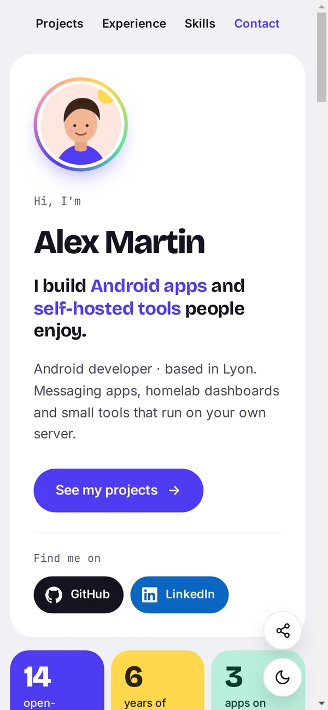
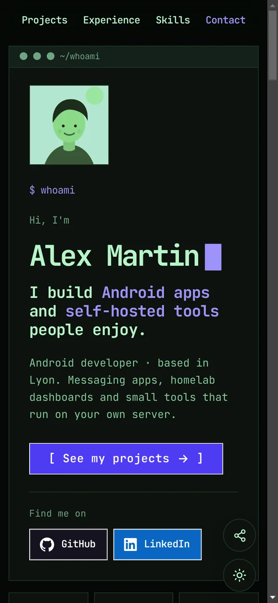
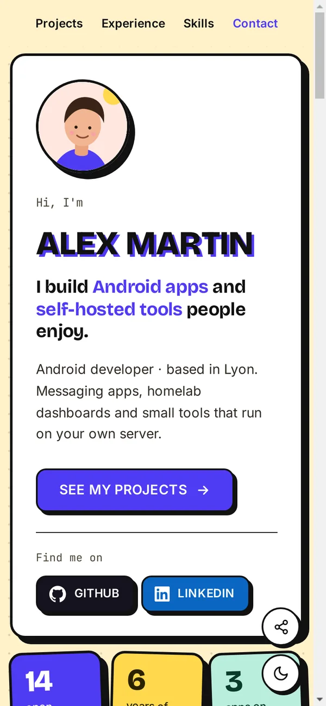

Your CV and projects, on your own server.
Folichon is a cheerful portfolio page you edit from your browser: who you are, what you build, where you’ve worked. One Docker container, no database, no tracker.

01 / Themes
Seven looks, one click away
Each theme changes the layout, not just the colours. Your accent colour, your fonts and the light / dark switch stay yours.

02 / Editor
Change everything from your browser
The editor lives at a secret address of your choice. No code, no rebuild: save, and the page is live.
- Every section: introduction, photo, key figures, projects, experience, skills, contact.
- Lists you reorder, undo on delete, and a guard against overwriting a newer version.
- Images, PDF and fonts sent from the editor, checked against their real content.
- Export / import your content and its images as one ZIP archive, to move to another server.

Make it yours
The Appearance section groups everything about style, apart from your content.
- Page language: French or English for buttons, menus and search engines.
- Accent colour and a colour set for each project.
- Fonts for headings and body: bundled, already on the device, or your own file.

03 / Mobile
Made for phones first
Most people will open your link on a phone: sticky menu, compact cards, and the phone’s own share sheet.



04 / Features
Everything a portfolio needs
And nothing it doesn’t: no account to create, no database to run, no script from someone else.
Looks like you
Photo, key figures, big project cards with their own colours and screenshots, timeline and skills.
7 themes
Folichon, Magazine, Terminal, Retro, Neon, Pop and Plain CV, with your choice of fonts.
Light and dark
Follows the visitor’s system, with a switch on the page and in the editor.
French and English
The page and the editor both speak French and English.
Share-ready
Rich previews on WhatsApp and LinkedIn, a link per project, and an e-mail never shown in clear.
Light
One small Node.js container, WebP images, fonts served by your own server.
Runs anywhere
Images for amd64 and arm64: a NAS, a VPS or a Raspberry Pi will do.
Update notice
The editor tells you when a new version is out. One switch turns it off.
05 / Security
Your page, locked down
A public page is a target. Folichon ships with sensible defaults, so you don’t have to think about it.
- Password and 6-digit code from any authenticator app; each code works only once.
- Limited attempts: 5 per IP and 30 in total every 15 minutes.
- Sessions you can revoke, tied to the password and the 2FA key.
- Strict headers (CSP, HSTS…) and uploads checked against their real content.
06 / Install
Up and running in three steps
You need a server with Docker. Folichon listens on port 3000; put it behind your usual reverse proxy for HTTPS.
Create a docker-compose.yml
services: folichon: image: ghcr.io/mrddream/folichon:latest container_name: folichon restart: unless-stopped init: true ports: - "3000:3000" env_file: .env volumes: - ./data:/data
Add a .env next to it
Only you should be able to read it: chmod 600 .env.
# Admin password: 12 characters or more ADMIN_PASSWORD= # Secret admin address ADMIN_PATH=/admin-7f3k9q2x # Public address, for share previews # SITE_URL=https://alexmartin.dev
Start it
mkdir -p data && sudo chown 1000:1000 data docker compose up -d
Open the admin address, sign in, and scan the QR code with your authenticator app. Then fill in your page.
Give your work a home
Free and open source under the MIT licence. Read the code, open an issue, or just install it.